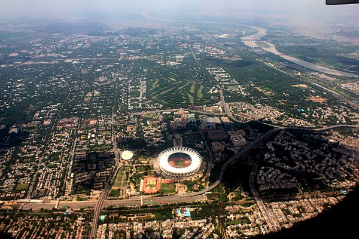

Delhi, India
I was born and brought up in New Delhi, India. It is the second most populated city of India after Mumbai. It is the capital of India, also known as the National Capital Territory.
I grew up in West Delhi(Hari Nagar). Delhi is a very polluted city. The Delhi Metro Rail Corporation is the 12th longest metro system in length.
Delhi also hosted the first ever Commonwealth games in India.
